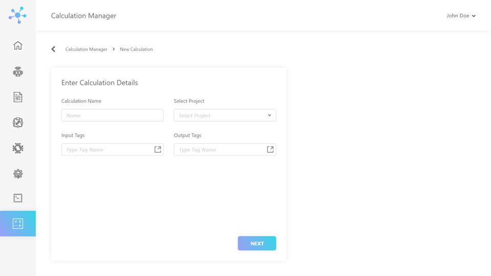
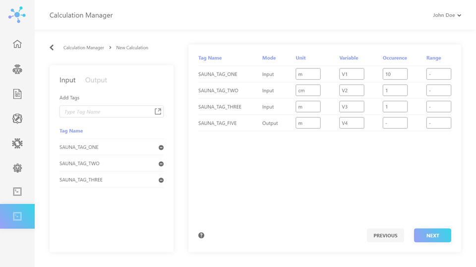
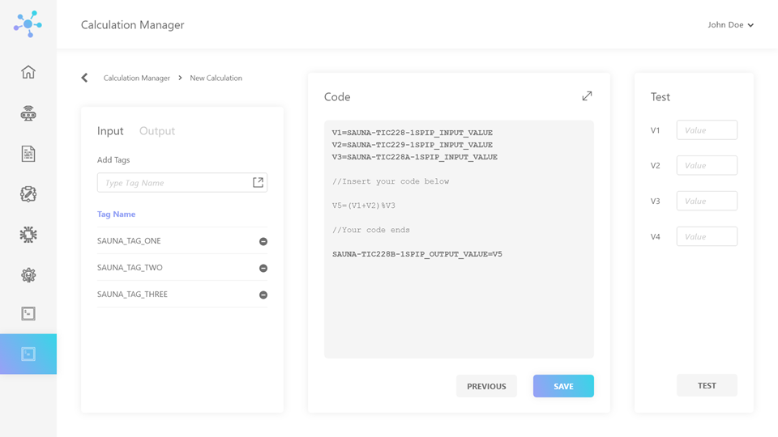
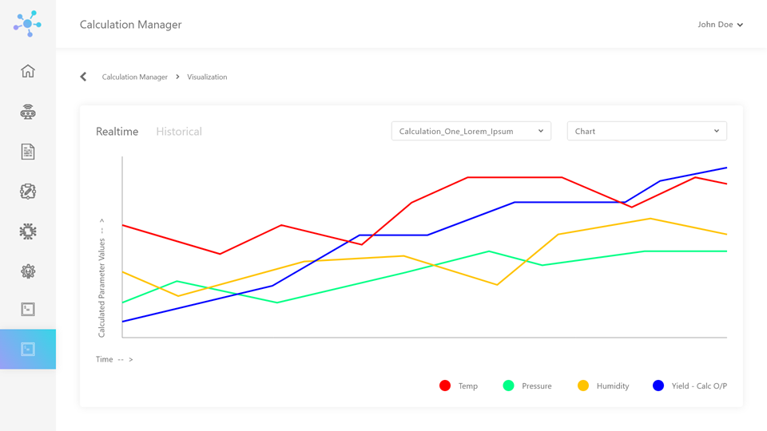
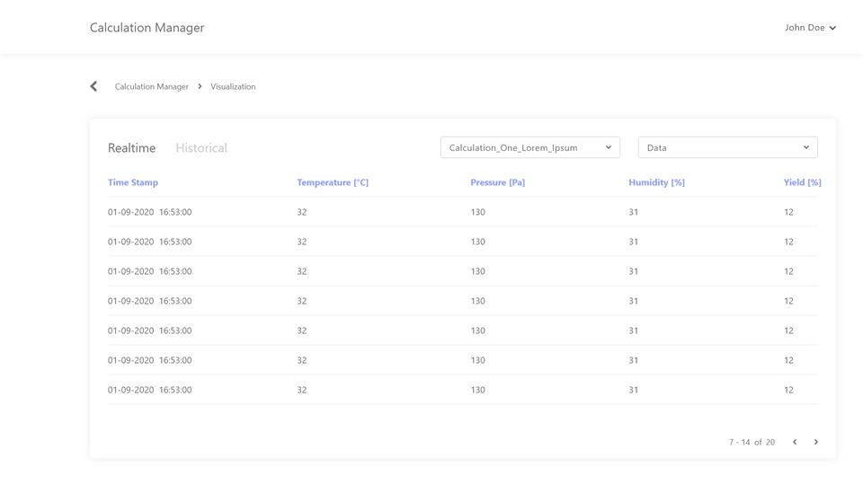
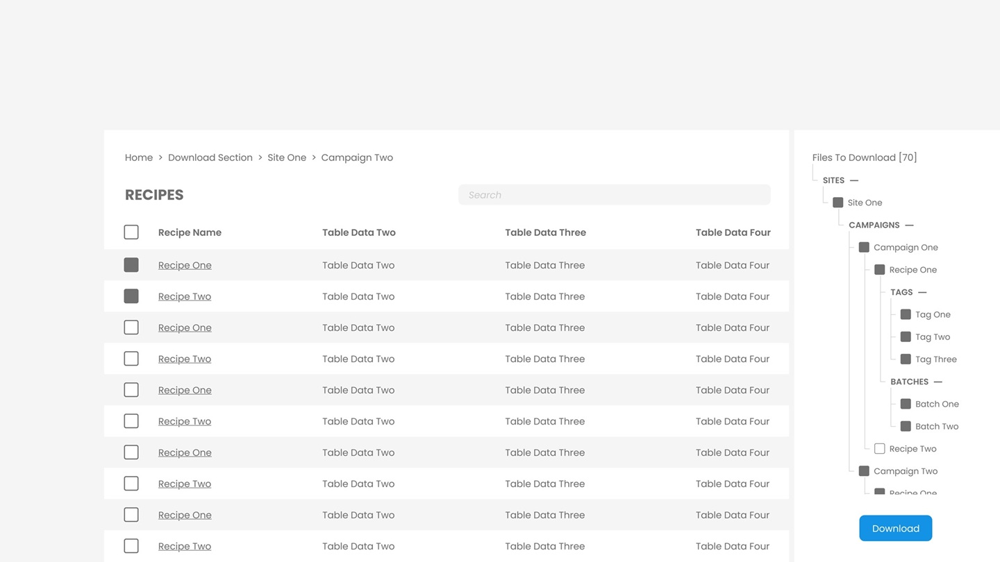

The Project
TCS Genomics Labs are highly advanced facilities that focus on genome sequencing and its analysis for drug discovery and research. This process requires the use of highly sophisticated, state-of-the-art machines, and generates a plethora of information. To operate these machines (technically IoT devices) and handle the generated information, the labs deploy the TCUP module, created by TCS itself. (TCS = Tata Consultancy Services, TCUP = TCS Connected Universe Platform)
My team (TCS Interactive) was given the task to design the visual-end of the TCUP module according to the needs of the genomics labs.
The machines that are used in the genomics labs can follow instructions given beforehand or in real time. They also have embedded sensors which generate an extensive log at runtime. When a bunch of these machines are programmed to work in unison to perform a task (like synthesizing a drug), that process is called a recipe or a calculation. A calculation is a code that is responsible for which machine does what, for how long, and how much. Calculations are handled by the Calculation Manager module, which can create, test, edit, visualize, and implement calculations.
I chose to work on the Calculation Manager and File Manager Modules.



When creating a calculation, the users can select input and output tags. Input tags contain the information that is pulled from the sensors, processed (via code), and stored in the output tags. The users can also test if the code is working or not using mock values.


The calculations can be visualized as a graph or a table, capable of depicting real-time values or historical data. The graph above depicts the effects of temperature, pressure, and humidity (the three inputs) on the yield (the output) of the drug being synthesized.
In such processes of the genomics labs, a lot of data is generated, like recipes, logs, graphs, etc. We are talking thousands and thousands of files. Hence, a system was required to efficiently view and download this data. A system that would breakdown the information in understandable and digestible chunks, let users find data globally (in all files at once), and make the entire process less overwhelming and time consuming.
Prior coming to me, the TCUP module had no visual system for file management. All the data was exported and maintained in excel files; thousands of excel files. Managing the information in this fashion was highly inefficient. I was challenged with the task to simplify it, and broke the information-retrieval process into the following steps.
Chose Site (Lab) > Choose Campaign (Particular Project) > Choose Recipe > Choose Tags (Which Attributes of Data to View) > Choose Batch (Data from When) > View/Download
I also chose to include two views in this user interface: Selection Stage View and Entire Selection View. Entire Selection View is a holistic view of the selected files to make it easier for the user to keep track of them. This also allows them to readily edit the selection and jump to multiple locations.

The File Manager is an extensive module with many features like comparing graphs, global search, editing data in multiple records. Unfortunately, I was not able to work on this project any further as I resigned from the organization to pursue my MA @ Cal State LA.